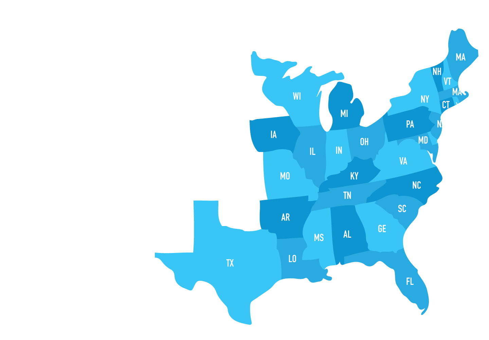
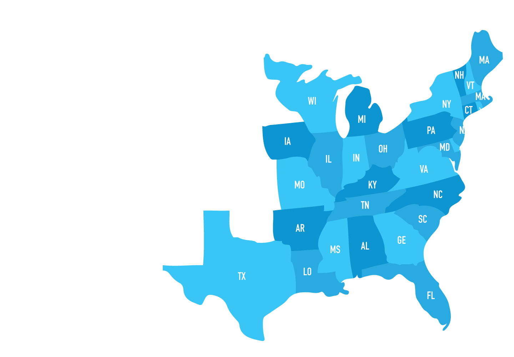
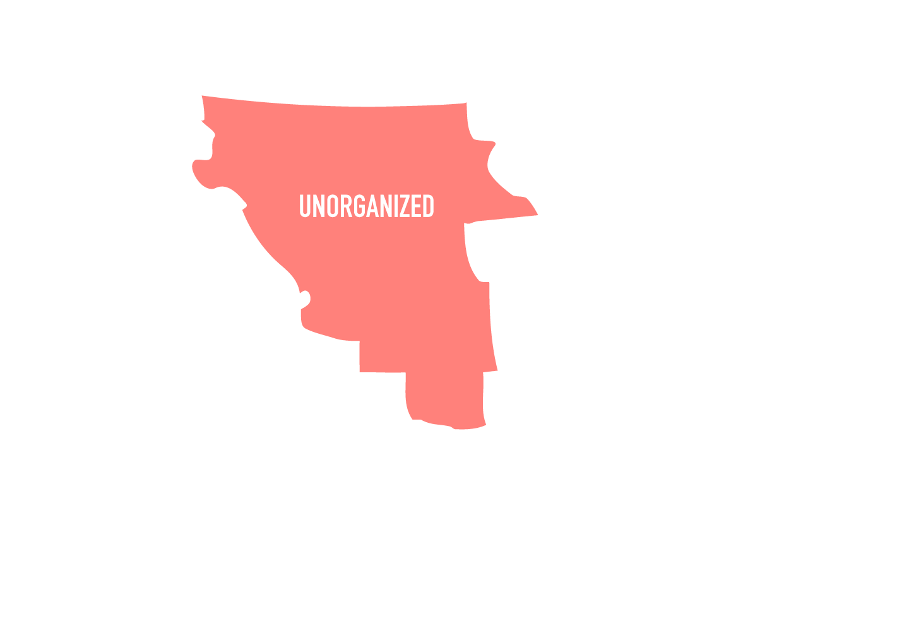
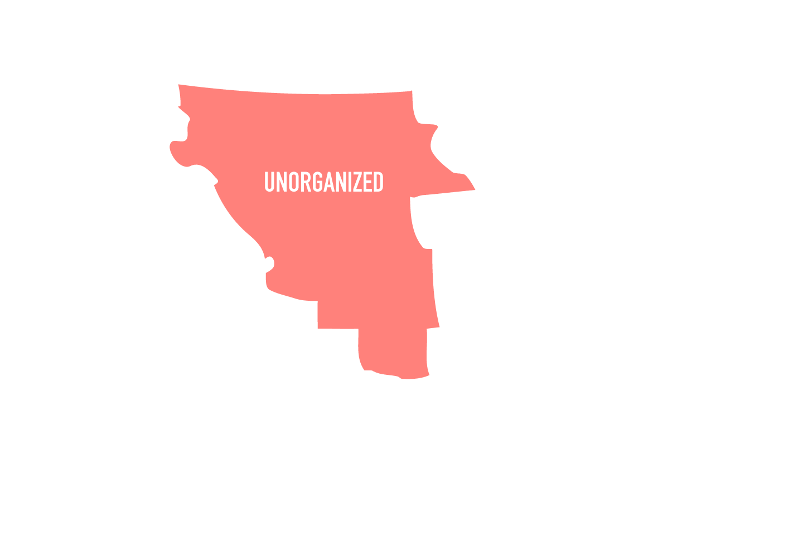

Period 2 includes the establishment of colonies all the way up to the French and Indian War (or if you want to call it the Seven Years’ War even though it was longer than seven years). (AP: This is 10% of your exam so make sure you have the basics down).
Let’s talk about why each European nation wanted to colonize the Americas in the first place and where they were located.
French
- Mostly in Canada (ex: Quebec)
- Expand trade (were especially known for fur trading)
- Developed good relationships with the natives
British
- Escape religious persecution and or to obtain wealth (mostly through agriculture)
- Bad relationship with natives because of land issues
- Only nation who didn’t want to deal with Natives
Dutch
- Expand trade
- Developed good relationship with natives
- Settled in New York
Spanish
- 3 G’s (as stated in the last period)
- Gain wealth and land
- Planned to eventually return to home country
- Included missionary works
Since the colonies that eventually formed the United States belonged to Great Britain, it is important to know how each region’s characteristics influenced their way of living and the types of people who settled in these areas.
- New England: Made up of people wanting to escape religious persecution
- Puritans
- Mostly came in families
- Great Migration to Massachusetts
- John Winthrop (“A City Upon a Hill”) wanted to created an ideal community
- Providence and Roger Williams
- Kicked out of the society/church because for Puritans, state and religion are often combined
- Advocated for separation of church and state
- Middle: Made up of people with greater religious tolerance
- Quakers settled in Pennsylvania (practically Quaker headquarters)
- Practiced the headright system (Pennsylvania)
- Farmed wheat
- Chesapeake: Made up of people looking to make a profit
- Farmed tobacco (cash crop), founded by John Rolfe
- Mostly men came to the Chesapeake region on their own to make money
- Used indentured servants (Virginia)
- Southern: Made up of people looking to make a profit
- Farmed rice
- Considered a buffer zone between the British and Spanish West Indies
People can’t just invade the lands of others and expect zero conflict. Colonists experienced problems with the Native Americans throughout the different regions.
- Pueblo Revolt (Pope’s Rebellion)
- Rise against Spanish colonization and Christianization
- They burnt down churches and made the Spanish leave
- King Philip’s War
- Last effort led by Native Americans in southern New England to drive out English settlers
- Collapsed trade
- King Philip destroyed 12 frontier towns
- Bacon’s Rebellion
- Nathaniel Bacon led a group of indentured servants to expand the frontier (due to lack of land) and push natives away
- William Berkeley (Virginia Governor) rejected and led to a rebellion.
- Pequot War
- The Pequot tribe engaged in war with English settlers in hopes to expand their control over land
- They lost and many were killed or sold into slavery
Although the colonists were in new lands, they still tried to retain aspects of their British culture. The process of anglicization, making things more English in nature, occurred in examples such as newspapers. George Whitefield, a cleric, founded the evangelical movement and Protestant Evangelicalism was introduced.
This also ties into the forms of government in the colonies.
- The Mayflower Compact (pilgrims) was influenced by the Magna Carta, a written government document in Great Britain
- House of Burgesses (aristocracy) in Virginia
- New England town meetings
The colonies may seem to have free reign, but Great Britain exerted their power over the colonies in a variety of ways.
- Mercantilism
- Trading to gain profit (commercialism)
- Navigation Acts
- Regulate colonial trade and collect taxes
- Dominion of New England (1686 - 1689)
- Administrative union
- King James II organized New England and Middle colonies to be ruled by one governor
- Colonists saw this as an attempt to take away their rights
- Greater religious independence and self government
- Great Awakening (religious freedom) and Enlightenment ideas
- Want to break away from established churches
- Salutary neglect
- During 1600s to 1700s, where British rarely enforced laws
Corruption was also an issue in early America as politics can create issues.
- Sir Edmund Andros of Dominion of New England
- Tried to make legal and structural changes
- Dominion was shortly overthrown
Bottom Line: Each country that colonized lands in the Americas was after something different, from religious freedom to gold and wealth.
When invading other people’s land, there will be problems, and the colonists experienced that with the Native Americans.
Even though the colonies were far away from Great Britain, English influence still made its way across the ocean.
We have taken a step closer to the formation of the United States of America.
 

 
